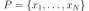
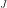
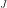
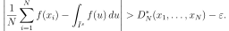

Low Discrepancy Sequence¶
 , its subsequence
has a low discrepancy.
, its subsequence
has a low discrepancy.At least three methods of numerical integration can be phrased as follows. Given a set in the interval [0,1], approximate the integral of a function f as the average of the function evaluated at those points:
If the points are chosen as , this is the rectangle rule.
If the points are chosen to be randomly distributed, this is the Monte Carlo method.
If the points are chosen as elements of a low-discrepancy sequence, this is the quasi-Monte Carlo method.
The discrepancy of a set  is defined, using Niederreiter’s notation, as

where is the s-dimensional Lebesgue measure,
 is the number of points in that fall into
is the number of points in that fall into
 , and  is the set of s-dimensional intervals or boxes
of the form:
, and  is the set of s-dimensional intervals or boxes
of the form:

where  .
.
The star-discrepancy D*N(P) is defined similarly, except that the supremum is taken over the set J* of intervals of the form

where  is in the half-open interval
is in the half-open interval  .
.
The two are related by
![\bar I^s = [0, 1] \times ... \times [0, 1]](../../_images/math/9620a0262dc28e92bc722dbb1ba42198cb6cc7fb.svg) . Let
. Let  have
bounded variation on in the sense of Hardy
and Krause. Then for any in
,
have
bounded variation on in the sense of Hardy
and Krause. Then for any in
,The Koksma-Hlawka inequality is sharp in the following sense: For any
point set in and any
> 0, there is a function with bounded
variation and such that:

Therefore, the quality of a numerical integration rule depends only on the discrepancy .
where  is a certain constant, depending on the sequence.
These sequences are believed to have the best possible order of
convergence. See also: Van der Corput sequence, Halton sequences,
Sobol sequences. In the case of the Haselgrove sequence, we have:
is a certain constant, depending on the sequence.
These sequences are believed to have the best possible order of
convergence. See also: Van der Corput sequence, Halton sequences,
Sobol sequences. In the case of the Haselgrove sequence, we have:
which means a worse asymptotic performance than the previous sequence, but can be interesting for finite sample size.
Remark 1:
 -dimensional
Lebesgue measure on , which guarantees that for all test
function (continuous and bounded)
-dimensional
Lebesgue measure on , which guarantees that for all test
function (continuous and bounded)  ,
converges towards .
,
converges towards .We then obtain:
Be careful: using low discrepancy sequences instead of random distributed points do not lead to the same control of the variance of the approximation: in the case of random distributed points, this control is given by the Central Limit Theorem that provides confidence intervals. In the case of low discrepancy sequences, it is given by the Koksma-Hlawka inequality.
Remark 2:
Remark 3:
The Sobol can be used for dimensions up to several hundreds (but our implementation of the Sobol sequence is limited to dimension less or equal to 40).
The Halton or reverse Halton sequences should preferably not be used for dimensions greater than 8;
The Faure sequences should preferably not be used for dimensions greater than 25;
Use Haselgrove sequences should preferably not be used for dimensions greater than 50;
Low-discrepancy sequences are also called quasi-random or sub-random sequences, but it can be confusing as they are deterministic and that they don’t have the same statistical properties as traditional pseudo-random sequences.
API:
Examples:
References:
Inna Krykova, Evaluating of path-dependent securities with low discrepancy methods, Master of Science Thesis, Worcester Polytechnic Institute, 2003.
Wikipedia contributors, Low-discrepancy sequence., Wikipedia, The Free Encyclopedia, 10 April 2012, 17:48 UTC, https://en.wikipedia.org/wiki/Low-discrepancy_sequence